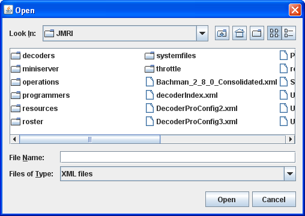
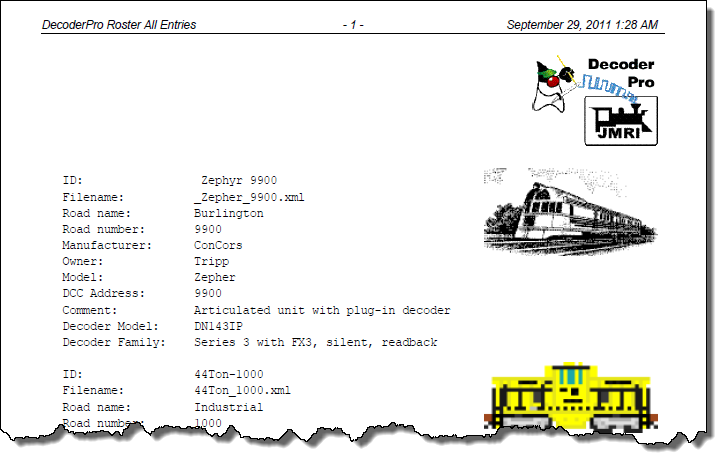

DecoderPro3® Main Window
Menu bar
Most of the DecoderPro3® functions can be accessed via the menu bar.

-
File
- New Decoder Pro Window
Opens another instance of Main DecoderPro3 window. - Import Roster
Imports Roster into DecoderPro3® - Import Roster Entry
Open the Open dialog to allow you to select a Roster Entry to import.

- Import Decoder File
Opens the Open dialog to allow you to select a Decoder File to import.
 - Import Decoder URL


- Export Roster Entry

Exports .xml file for the selected locomotive on your roster.

- Export Complete Roster

- Print Roster

- Entry
Opens the Select Items to Print dialog - Summary
- Print Preview Roster
- Entry
Opens the Select Items to Print dialog - Summary

- Entry
- Quit
-
Edit
- Cut
- Copy
- Paste
- Duplicate Loco
Select the roster entry that you would like to duplicate. Enter a new name for the duplicate entry.

press OK and the duplicate is now added to the roster list. You may now edit or reprogram as required.
 .
.
- Delete Loco
Select the loco that you wish to delete in the roster list, select menu item.

- Preferences Opens the Preferences window.
-
Settings
- Hide/Show Summary Pane
Toggles the decoder information on/off, Part 4 of the main windowShow decoder summary pane

Hide decoder summary pane

- Reset Window Sizes
not available yet - Reset Column Widths
- Hide/Show Roster Images
Toggles the roster image in Part 4 of the main window on/offRoster image on.
Roster image off

- Hide/Show Roster Groups
- Programming
- Service Mode
Selects the Service Mode (Programming Track ) - Operations Mode
Selects the Operations Mode (Program on Main) - Edit Mode
Selects Edit Mode that allows you to edit locomotive roster without changing the program
- Service Mode
- Create Roster Group
- Rename Roster Group
- Duplicate Roster Group
- Delete Roster Group
-
Actions
- Program
Opens the Programmer that is setup in your prefernces, Comprehensive Programmer, defaults to Basic Programmer
- Labels and Media
Opens the Labels and Media window with two tabs to set these parameters for the selected roster entry in your roster. Select the Function Labels TAB to edit your throttle function labels. Select the Roster Media TAB to edit the icon for your roster selection.
- New Throttle
- Load Default Throttle Layout
Opens the default throttle that is set in preferences
- Consisting Tool
- Turnout Control
- Power Control

- Speedometer
- Single CV Programmer
- Start WiThrottle Server

- Start Mini Web Server

- Recreate Roster Index
Recreates the Roster Index when adding new XML roster files. - Recreate Decoder Index
Used to update Decoder Index when new decodeer files are added.
- Run Script
Opens a dialog to allow you to select a script that will run within DecoderPro3®.
-
Manufacturer Specific Menu
This menu is dependent upon the equiment you are using.
-
Window
- Minimize
- open windows listed
-
Help
- Window Help...
- General Help...
- License...
- Locations...
- Context...
- System Console...
- Upload Debugging Info...